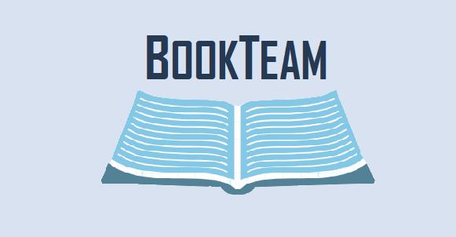

INDICE
BookTeam es uno de los mejores club de lectura de Canarias. Este proyecto comenzó en San Cristóbal de La Laguna (SC de Tenerife).
Podrás encontrar información sobre las distintas reuniones que realizamos entre las distintas Islas Canarias. Consultar los libros más solicitados y leídos cada mes, opinar sobre los mismos y compartir tus gustos y experiencias con nosotros. BookTeam, también, ofrece servicio de préstamo de libros con los miembros de la comunidad, regístrate y comienza a conocernos.